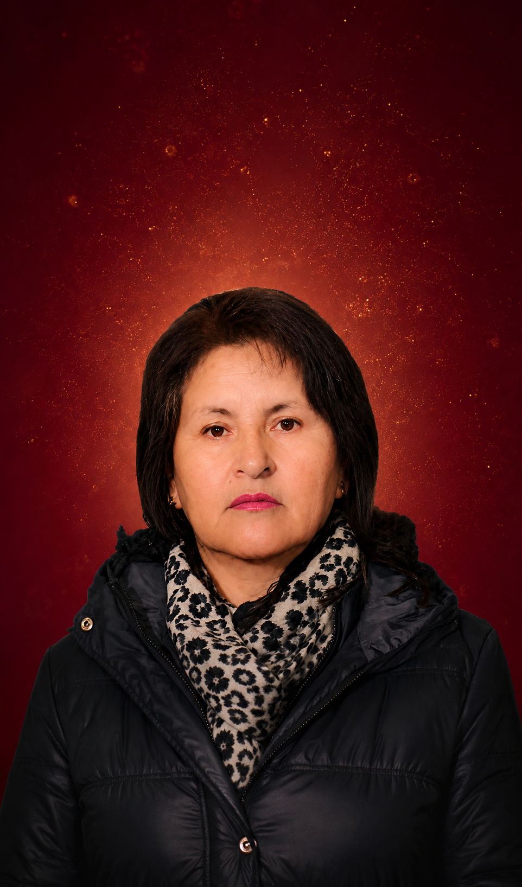
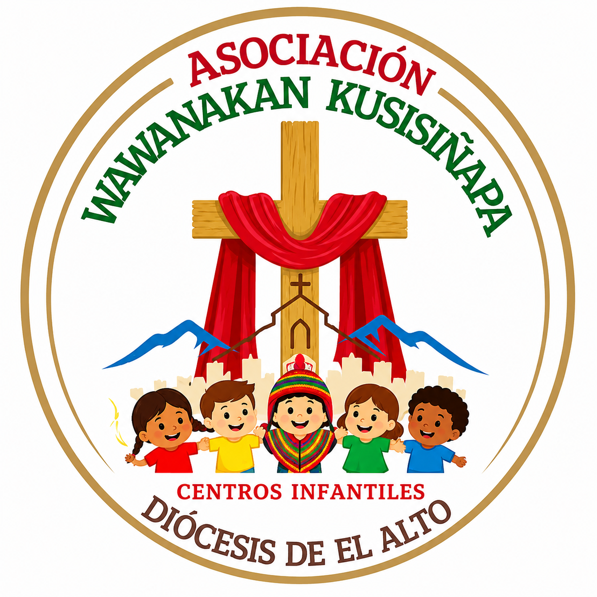
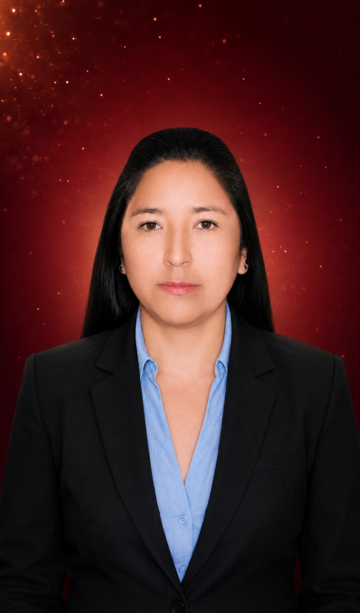
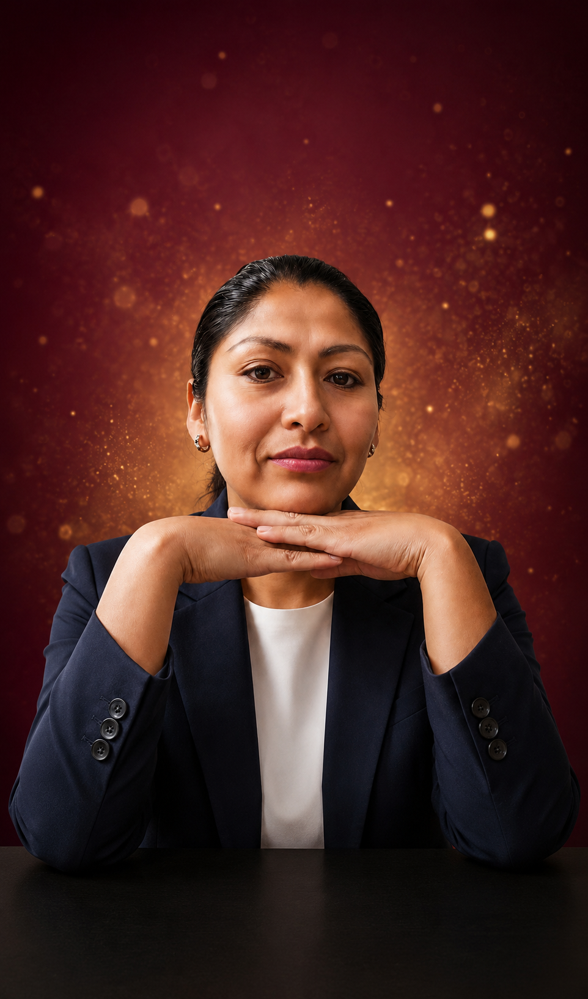

Lic. Tania Loyola Acarapi Mamani
Presidencia
Presidencia
Lidera y representa institucionalmente a la asociación.

ASOCIACIÓN WAWANAKANGestión transparente para una niñez con oportunidades.


Presidencia
Lidera y representa institucionalmente a la asociación.
Vicepresidencia
Apoya la coordinación general y el fortalecimiento organizacional.

Área de Actas
Gestiona el registro, orden y seguimiento documental.

Proyectos Nacionales
Impulsa iniciativas y articulaciones a nivel nacional.

Área de Hacienda
Apoya la gestión administrativa y el seguimiento económico.

Proyectos Internacionales
Fortalece vínculos y oportunidades de cooperación externa.
Acompañamos hoy, transformamos el mañana.